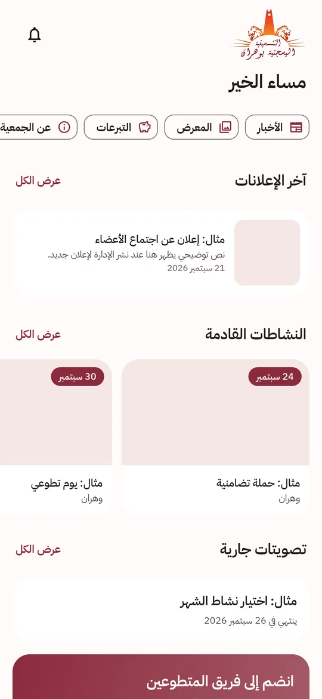
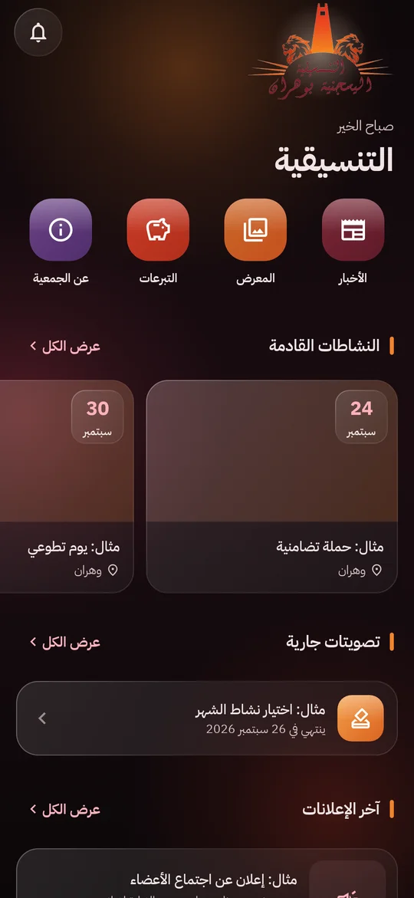

التطبيق الرسمي للجمعية
تابع أخبار الجمعية ونشاطاتها، سجّل كمتطوع، وشارك في التصويت — كل ذلك من هاتفك.
تنزيل التطبيق لأندرويد (APK) سيتوفر قريباًيتطلب أندرويد 7.0 أو أحدث. مجاني وبدون إعلانات.


اللقطات للتوضيح وتحتوي على أمثلة؛ المحتوى الفعلي تنشره الجمعية.
ماذا يقدم التطبيق؟
- الأخبار والإعلاناتآخر أخبار الجمعية مع إمكانية القراءة دون اتصال.
- النشاطات والحملاتمواعيد النشاطات وأماكنها والتسجيل للمشاركة.
- التطوعقدّم طلب تطوع وتابع حالته والمهام المسندة إليك.
- التصويتتصويت آمن: صوت واحد لكل حساب مؤكد، مع إمكانية التصويت السري.
- تأكيد الرقم عبر تيليغرامبدون رسائل SMS: مشاركة رقمك عبر بوت الجمعية الرسمي.
- الصور والفيديوهاتمعرض لصور ومقاطع النشاطات.
- التبرعاتمعلومات التبرع الرسمية (بدون أي دفع داخل التطبيق).
- عربي وفرنسيواجهة عربية كاملة مع دعم اللغة الفرنسية، ووضع داكن.
طريقة التثبيت
- اضغط على زر التنزيل أعلاه من هاتفك.
- افتح الملف الذي تم تنزيله. إذا طُلب منك ذلك، اسمح للمتصفح بتثبيت التطبيقات من هذا المصدر (الإعدادات ← الأمان).
- اضغط «تثبيت» ثم افتح التطبيق.
- لتحديث التطبيق، نزّل الإصدار الجديد من هذه الصفحة وثبّته فوق الإصدار الحالي — تبقى بياناتك محفوظة.
نزّل التطبيق من هذه الصفحة فقط. لا تثبّت نسخاً من مصادر أخرى.
اتصل بنا
ستُنشر معلومات الاتصال الرسمية قريباً.